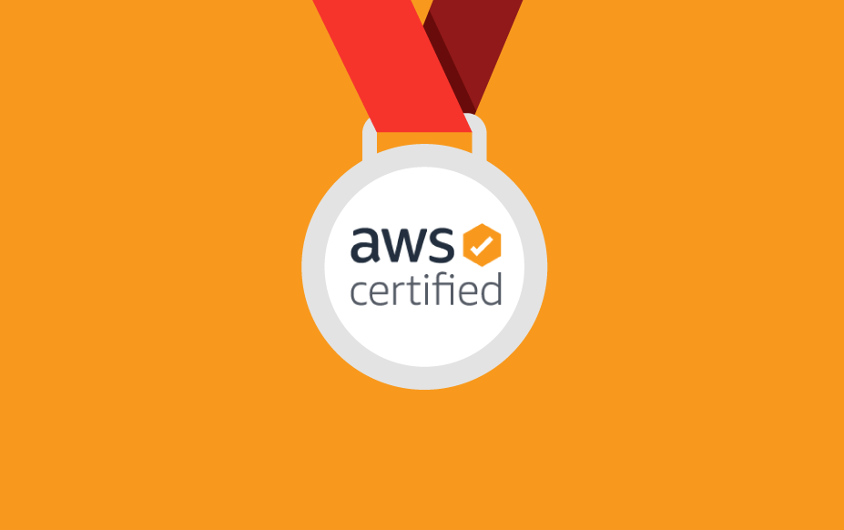

Hello! I'm Arnav Pal, a passionate and dedicated junior majoring in Computer Science with a minor in
General Business at the University of Maryland, College Park. With a robust foundation in various
programming languages including Java, JavaScript, Python, C, HTML, MATLAB, and SQL, I have honed my
skills through diverse projects and technical experiences. I am AWS Certified as both a Solutions Architect
and Developer Associate, showcasing my proficiency in designing and implementing scalable cloud solutions.
My project portfolio features a range of innovative applications and will be detailed on this website.
Eager to continue my journey in software engineering, I am committed to leveraging my skills to create
impactful solutions and drive innovation. Thank you for taking a look at my portfolio, you can view my resume below.
Education:
University of Maryland
(Aug 2021- May 2025)

Major: Computer Science
Minor: General Business, UMD Smith School of Business
Relavant Courses: Object Oriented Programming, Data Structures, and Algorithms, Computer Systems, Discrete Structures, Organization
of Programming Languages, Introduction To MATLAB, Calculus I & II, Applied Probability and Statistics, Linear Algebra, Intro to Data Science, Web Application Development
Extracurriculars: UMD Smith Undergraduate Student Association, Bitcamp Hackathon, ACM-ICPC, FRC, UNICEF, Google Code Jam

Programming Languages: Java, JavaScript, Python, C, HTML, MATLAB, R, Ruby, Ocaml, Node.Js, CSS, SQL, MS Office
Soft Skills: Communication, Critical Thinking, Attention To Detail, Organization, Time Management
Operating Systems: Linux, UNIX, EMACS
Frameworks: Git, Github, Flask, Jquery
IDEs: VSCode, Eclipse
 ● Developed a predictive model using Python and machine learning (Linear Regression) to forecast stock values based on fiscal annual revenue for Meta, Amazon, Netflix, Apple, and Google from 2013 to 2024, achieving high accuracy as measured by MSE and R-squared scores
● Developed a predictive model using Python and machine learning (Linear Regression) to forecast stock values based on fiscal annual revenue for Meta, Amazon, Netflix, Apple, and Google from 2013 to 2024, achieving high accuracy as measured by MSE and R-squared scores
● Conducted extensive data analysis by collecting, cleaning, and visualizing historical financial data, utilizing tools like Pandas, NumPy, Matplotlib, and BeautifulSoup to uncover trends and growth patterns
● Provided actionable insights for investors and stakeholders through clear visualizations and comprehensive analysis, enabling informed decision-making based on predicted financial performance
● Hosted the results on Git Pages..
● Implemented user authentication, real-time weather updates, and data retrieval based on city input using Express, MongoDB, and EJS templating
● Utilized body-parser middleware for form handling, configured environment variables with dotenv, and deployed with configurable port settings aswell as a hosting a static website through render
● Integrated MongoDB Atlas for scalable cloud database management, ensuring efficient data storage and retrieval for login credentials and weather data
 ● Programmed an exam generator to create different types of questions (true/false, multiple choice, and fill-in-blank questions), kept track of students who took the exams, and produced basic statistics for each student and the class
● Programmed an exam generator to create different types of questions (true/false, multiple choice, and fill-in-blank questions), kept track of students who took the exams, and produced basic statistics for each student and the class
● Exhibited knowledge of OOP, serialization, interfaces, polymorphism, and hash maps
● Implemented a command line interpreter to output student's names, exams, and answers
 ● Designed and developed a responsive personal portfolio website using HTML, CSS, and JavaScript.
● Designed and developed a responsive personal portfolio website using HTML, CSS, and JavaScript.
● Implemented smooth scrolling navigation and responsive design for cross-device compatibility.
● Showcased key projects with detailed descriptions, images, and links to GitHub repositories.
● Integrated external links to LinkedIn and GitHub profiles using Font Awesome icons and ensured accessibility.
 ● Performed operation on a random number generator to create and shuffle a deck on Eclipse
● Performed operation on a random number generator to create and shuffle a deck on Eclipse
● Manipulated ENUMs to assign card suits and values
● Created a reader to perform complex operations to determine player and dealer card values
● Ensured system efficiency through the creation of JUnit tests

AWS Certified Solution Architect - Associate
AWS Certified Developer - Associate
● Have a knowledge of designing and implementing scalable and cost-effective cloud solutions on the Amazon Web Services platform.
● Proficient in architecting highly available and secure infrastructure, leveraging various AWS services to meet diverse business needs.
Skilled in optimizing application performance, cost management, and cloud best practices to drive operational efficiency
● Proficient in writing code for serverless applications, leveraging AWS services to enhance application functionality and performance.
● Experienced in debugging and optimizing cloud applications, implementing CI/CD pipelines, and using AWS developer tools to streamline
the development lifecycle.